Start Here
Main Computational Grid APIs.
Start Here
Main Computational Grid APIs.GridCloud.GridFactory.Future interface.GridTask.GridTask.result(GridJobResult, List)
method.GridLifecycleEventType.
|
GridGain™ 3.1.1c
Community Edition |
|||||||||
| PREV PACKAGE NEXT PACKAGE | FRAMES NO FRAMES | |||||||||

 Start Here
Contains main Compute Grid APIs.
Start Here
Contains main Compute Grid APIs.
See:
Description
| Interface Summary | |
|---|---|
| Grid | Start Here
Main Computational Grid APIs. |
| GridCloud | This interface defines cloud descriptor. |
| GridCloudCommand | Defines cloud command. |
| GridCloudEnabled | Base interface for all cloud enabled algorithms such as strategies and policies. |
| GridCloudMBean | This interface defines JMX view on GridCloud. |
| GridCloudPolicy | Defines pluggable SLA/QoS control for execution of cloud commands. |
| GridCloudResource | Cloud resource defines any type of manageable resource on the cloud. |
| GridCloudResourceShadow | When a cloud resource is removed it leaves a shadow. |
| GridCloudResourceType | Defines set of built-in cloud resources. |
| GridCloudStrategy | Defines cloud strategy for automated cloud management. |
| GridConfiguration | This interface defines grid runtime configuration. |
| GridDiscoveryListener | Deprecated. |
| GridEnterpriseLicense | GridGain Enterprise license descriptor. |
| GridEvent | Grid events are used for notification about what happens within the grid. |
| GridEventType | Contains event type constants. |
| GridExecutorServiceMBean | MBean that provides access to information about executor service. |
| GridFactoryListener | Listener for gird state change notifications. |
| GridFactoryMBean | This interface defines JMX view on GridFactory. |
| GridFuture<R> | Extension for standard Future interface. |
| GridJob | Defines executable unit for GridTask. |
| GridJobContext | Context attached to every job executed on the grid. |
| GridJobContinuation | Defines continuation support for grid job context. |
| GridJobResult | Result of remote job which gets passed into GridTask.result(GridJobResult, List)
method. |
| GridJobSibling | Job sibling interface defines a job from the same split. |
| GridKernalMBean | This interface defines JMX view on kernal. |
| GridLifecycleBean | A bean that reacts to grid lifecycle events defined in GridLifecycleEventType. |
| GridLoadBalancer | Load balancer is used for finding the best balanced node according to load balancing policy. |
| GridLocalEventListener | Listener for asynchronous local node grid events. |
| GridMessageListener | Deprecated. |
| GridMetadataAware | Allows to attach metadata attributes to any entity that implements this interface. |
| GridNode | Interface representing a single grid node. |
| GridNodeLocal<K,V> | Defines interface for node-local storage. |
| GridNodeMetrics | This class represents runtime information on a node. |
| GridNodeShadow | When a grid node leaves the topology it leaves a shadow. |
| GridPeerDeployAware | Represents any class that needs to maintain or carry on peer deployment information. |
| GridProjection | Defines grid projection interface and monadic set of operations on a set of grid nodes. |
| GridProjectionMetrics | This interface defines cumulative metrics for the projection. |
| GridRichCloud | Defines a "rich" cloud as a cloud-based grid projection. |
| GridRichNode | Defines a "rich" node as a single node-based grid projection. |
| GridScheduleFuture<R> | Future for cron-based scheduled execution. |
| GridTask<T,R> | Grid task interface defines a task that can be executed on the grid. |
| GridTaskContinuousMapper | Defines a mapper that can be used for asynchronous job sending. |
| GridTaskFuture<R> | This class defines a handler for asynchronous task execution. |
| GridTaskListener | Deprecated. |
| GridTaskSession | Defines a distributed session for particular task execution. |
| GridTaskSessionAttributeListener | This interface defines listener for task session attributes. |
| Class Summary | |
|---|---|
| GridCloudCommandAdapter | Convenient POJO adapter for GridCloudCommand. |
| GridCloudEnabledAdapter | Adapter for cloud enabled entities such as strategies and policies. |
| GridConfigurationAdapter | Adapter for GridConfiguration interface. |
| GridFactory | This class defines a factory for the main GridGain API. |
| GridJobAdapter<G extends Serializable> | Deprecated. |
| GridJobAdapterEx | Convenience adapter for GridJob implementations. |
| GridJobOneWayAdapter | Utility adapter for jobs returning no value. |
| GridJobWrapper | Convenient wrapper for grid job. |
| GridListenActor<T> | Actor-base adapter for GridProjection.listen(GridPredicate2[])
method. |
| GridSpringBean | Grid Spring bean allows to bypass GridFactory methods. |
| GridSystemProperties | Contains constants for all system properties and environmental variables in GridGain. |
| GridTaskAdapter<T,R> | Convenience adapter for GridTask interface. |
| GridTaskNoReduceAdapter<T> | Adapter for GridTaskAdapter
overriding reduce(...) method to return null. |
| GridTaskNoReduceSplitAdapter<T> | Adapter for GridTaskSplitAdapter
overriding reduce(...) method to return null. |
| GridTaskSplitAdapter<T,R> | This class defines simplified adapter for GridTask. |
| Enum Summary | |
|---|---|
| GridClosureCallMode | Distribution modes for one or more closures executed on the cloud via Grid.call(...) methods. |
| GridDeploymentMode | Grid deployment mode. |
| GridDiscoveryEventType | Deprecated. |
| GridFactoryState | Possible states of GridFactory. |
| GridJobResultPolicy | This enumeration provides different types of actions following the last received job result. |
| GridLifecycleEventType | Grid lifecycle event types. |
| GridTaskSessionScope | Defines life-time scopes for checkpoint and swap space operations. |
| Exception Summary | |
|---|---|
| GridEmptyProjectionException | This exception defines illegal call on empty projection. |
| GridException | General grid exception. |
| GridExecutionRejectedException | This exception defines execution rejection. |
| GridFutureCancelledException | Future computation cannot be retrieved because it was cancelled. |
| GridFutureTimeoutException | Future computation completion is timed out. |
| GridInterruptedException | This exception is used to wrap standard InterruptedException into GridException. |
| GridLicenseException | This exception is thrown when license violation is detected. |
| GridRuntimeException | Common runtime exception for grid. |
| GridTaskCancelledException | This exception indicates that grid task was cancelled. |
| GridTaskTimeoutException | This exception indicates that task execution timed out. |
| GridTopologyException | This exception is used to indicate error with grid topology (e.g., crashed node, etc.). |
| GridUserUndeclaredException | This exception is thrown when user's code throws undeclared runtime exception. |
| Annotation Types Summary | |
|---|---|
| GridJobAfterExecute | This annotation allows to call a method right after the job has finished executing and the reply has been sent to the caller node. |
| GridJobAfterSend | This annotation allows to call a method right after the job has been successfully sent for execution. |
| GridJobBeforeFailover | This annotation allows to call a method right before job is submitted to Failover SPI. |
| GridTaskName | This annotation allows to assign optional name to grid task. |
| GridTaskNoResultCache | This annotation disables caching of task results when attached to GridTask class
being executed. |
| GridTaskSpis | This annotation allows task to specify what SPIs it wants to use. |
Start Here
Contains main Compute Grid APIs. For more information
see Basic Concepts on Wiki.
| 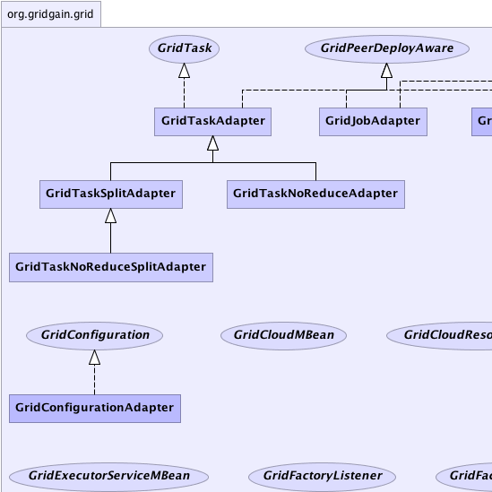 |  |
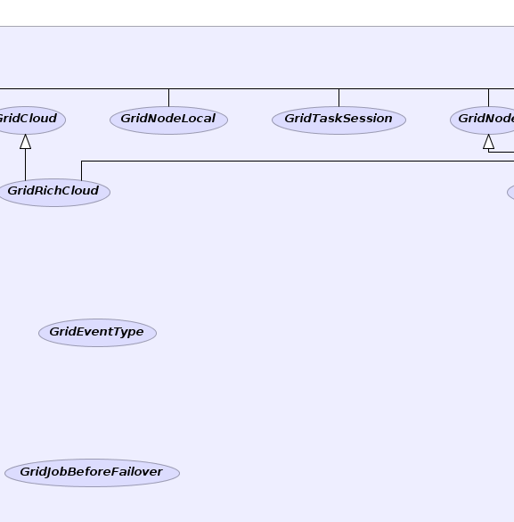 | 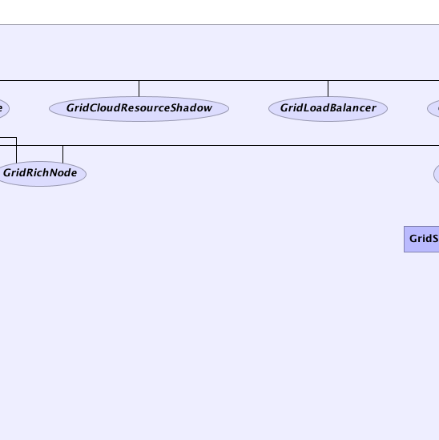 | 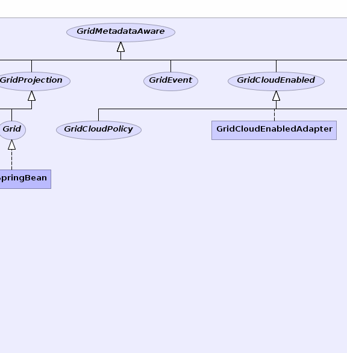 | 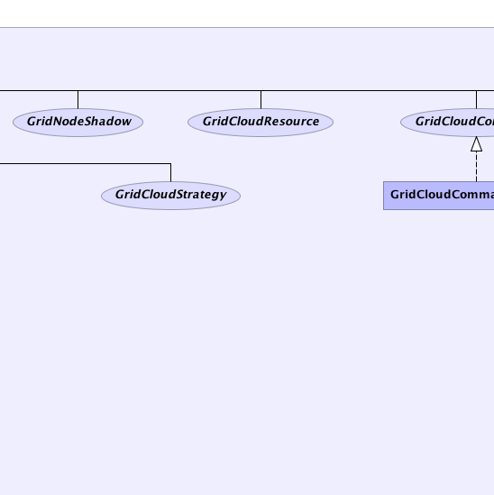 | 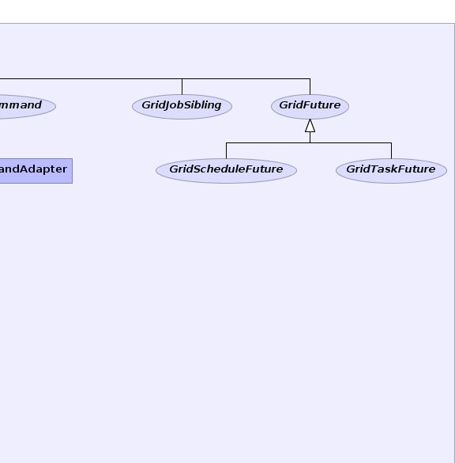 |
| 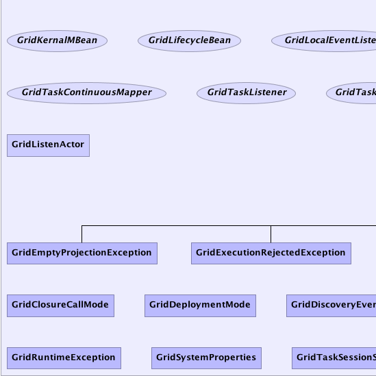 | 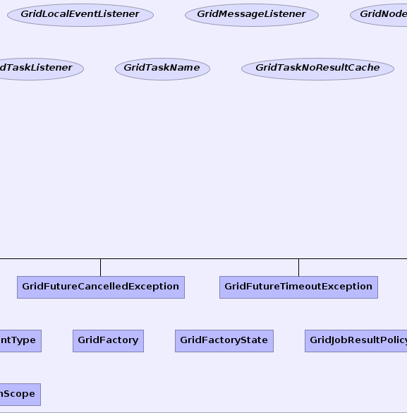 | 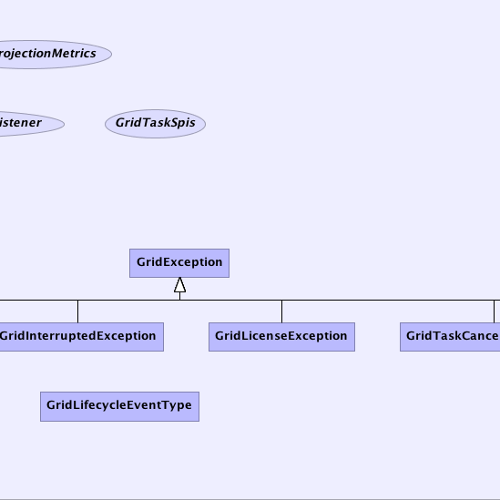 | 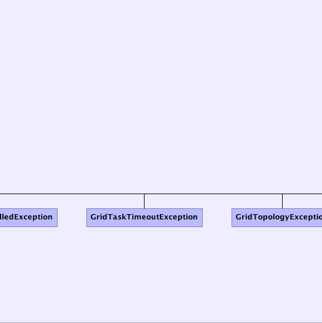 | 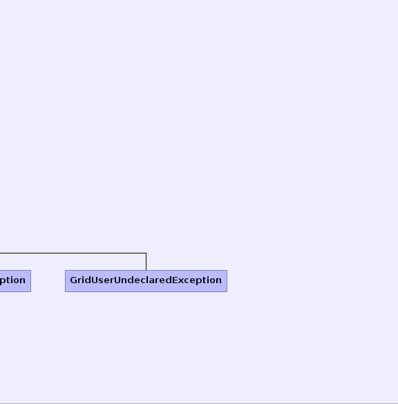 | 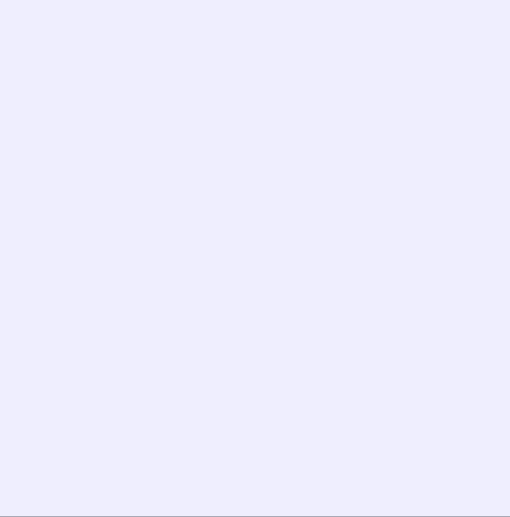 |
|
GridGain™ 3.1.1c
Community Edition |
|||||||||
| PREV PACKAGE NEXT PACKAGE | FRAMES NO FRAMES | |||||||||
|
GridGain = High Performance Cloud Computing
|
|

|
|